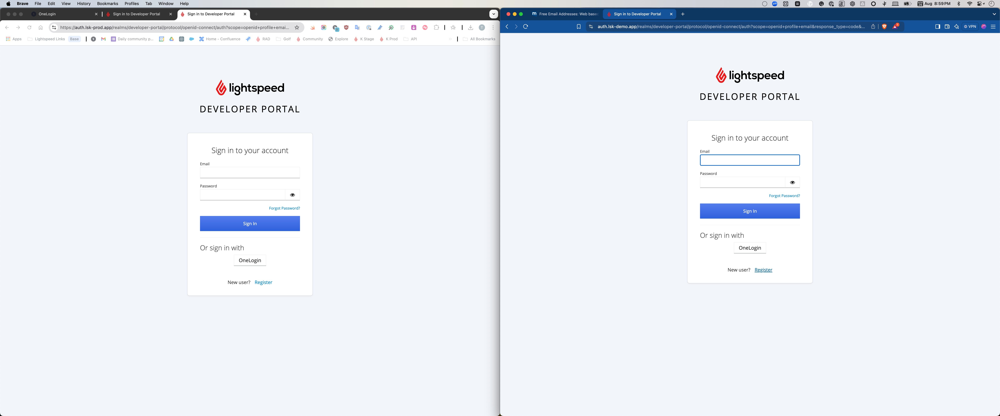
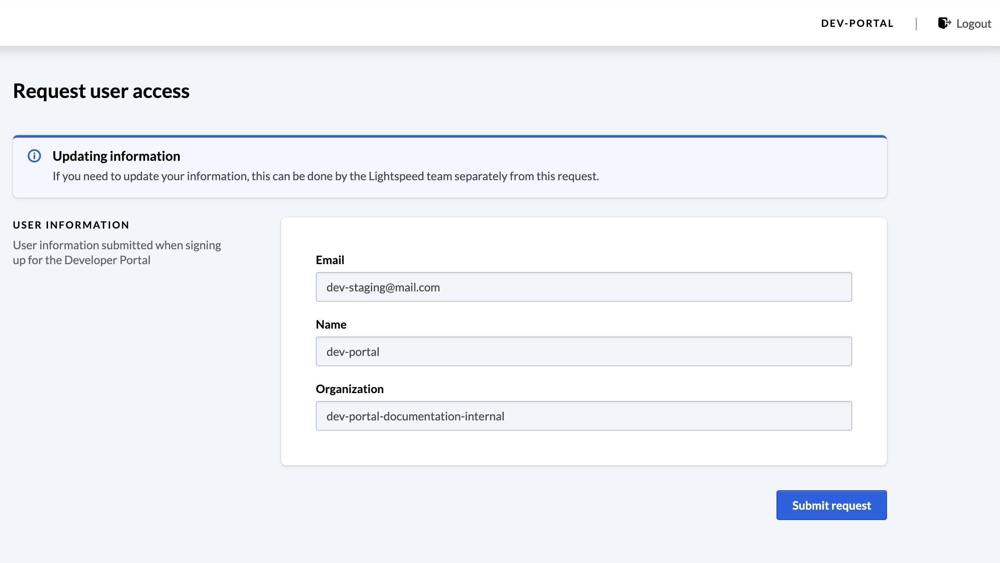

10. [INTERNAL] Review the request to ensure it complies with internal requirements. Once verified, approve the request.

1. Navigate to https://developer-portal.lsk-demo.app/ (staging) or https://developer-portal.lsk-prod.app/ (production) to create a new account.
2. Click "Register".

3. Complete the registration form, ensuring all fields are filled, and provide a valid email address.
4. Click "Register" again.
5. Wait for the email verification. Click the "Link to email address verification" in the email.
6. Click "Request Access" and wait for approval.
7. After approval, click "Submit request".

8. You will receive a Slack notification for internal review.
9. [INTERNAL] Click "Access Request", based on the partner developer email.
10. [INTERNAL] Review the request to ensure it complies with internal requirements. Once verified, approve the request.
11. [INTERNAL] Click "Approve request".
12. Once approved, the user will receive an email saying, "You now have access to the Lightspeed Developer Portal!".
13. The status should update to [[Provisioned]]. If the user has issues submitting requests, ask them to sign out and sign back in.
14. If users see [[Request in review]], instruct them to sign out or clear their cache.
15. Click “Logout,” then sign back in.
16. After logging back in, the “Go to requests” option should appear.
17. Click [[New request]] to create a new API client.

18. Select the relevant request type.
19. Complete the form to submit a new API client request.
20. Scopes

21. Click "Create request".
22. The internal team will be notified via Slack. Navigate to the Developer Portal > Requests > Look for the request based on the developer email.
23. [INTERNAL] Review the information carefully and click [[Approve request]].
24. [INTERNAL] An email will be sent with client credentials.
25. Click "Your Lightspeed K-series API client has been created."

26. Click "onetimesecretlink".
27. Only the API clientId and clientSecret will be sent.